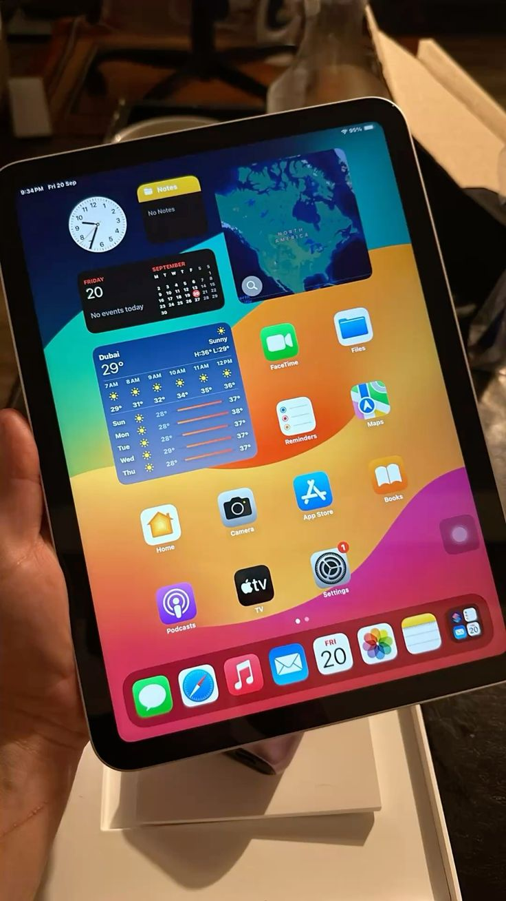
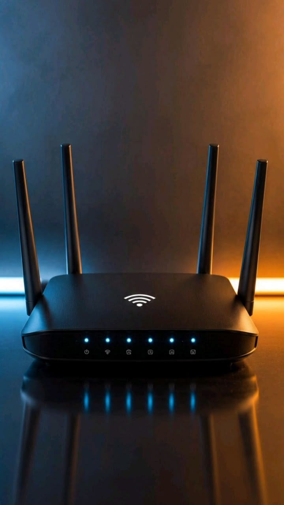
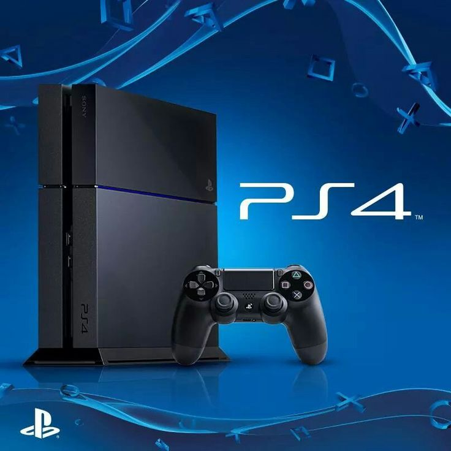

We hope you are truly enjoying to visit this website and exploring the vast world of digital innovation. There is a wide variety of powerful tools which help you to be fully aware and are readable used in daily life with a modern technology life. In this digital era, understanding these components is the key to unlocking your full potential. So below are some descriptive details and pictures that show some advanced tools we use to interact with high-end IT services every single day.
Now days, most of global network users they use AI as their primary source engine searching because it provides and serving many heavy works with absolute perfection. Artificial Intelligence has revolutionized industries by assisting in automated image creation, professional logo creation, instant website builders, formatting business documents, writing complex programming codes, formulating strategic business planning, and also managing complex government issues and data analysis securely.

As we know, a computer is an electronic device that used simplify work and automate human daily routines. We use computer for many heavy work like professional editing documents, high-resolution display a picture, advanced multimedia editing video, and seamless transfer files from one device to another. But also, we use computer for corporate reassurance, high-pressure professional environments, managing official government issues, database administration, and launching long-term business planning platforms.
.jpg)
Smart phone devices are used in many many works now day, and they have become an inseparable part of human survival. Almost millions of people across the globe they used smartphone for many critical purposes like international calling, instant chatting, mobile business planning, searching academic materials, reading and writing online pages, supporting the remote education process, managing organization issues, corporate reassurance, high-end digital content creation, and also we use in recording high-definition movies and capture professional pictures on the go.

Tablets and iPads bridge the gap between smartphones and full computers, providing ultimate portability combined with a larger screen. These highly efficient devices are heavily used by digital artists for drawing illustrations, corporate leaders for reviewing presentation slides, and students for reading e-books comfortably. With touch-screen capabilities and long battery life, tablets make working on the move incredibly smooth and interactive for everyone.

Smart watches have completely changed how we track our lives and stay connected without even touching our heavy phones. These small but highly powerful wearable devices are used daily for real-time health monitoring, counting footsteps, checking heart beats, receiving instant notifications, and tracking GPS locations during traveling. They act as a mini-computer on your wrist, helping modern people manage their busy time, track physical fitness, and maintain digital connectivity effortlessly.

Smart TVs have transformed modern living rooms into ultimate digital entertainment hubs. Unlike old televisions, a modern Smart TV connects directly to the internet via Wi-Fi, allowing users to watch online educational videos, stream high-definition movies on platforms like Netflix or YouTube, and browse digital web contents on a huge screen. They support voice commands and connect smoothly with smartphones to give you total control over your modern media experience.

An internet router is the ultimate backbone of all Information Technology services because without connectivity, digital tools cannot communicate. These essential hardware devices are designed to distribute high-speed internet across multiple computers and smartphones simultaneously using Wi-Fi networks. We use routers to enable smooth video conferencing, online streaming, secure cloud data sharing, and connecting smart home appliances to the global web server network.

Gaming Consoles are high-performance computational devices dedicated entirely to gaming, entertainment, and virtual simulation. Devices like the PlayStation and Xbox utilize advanced graphics processors to create breathtakingly realistic digital worlds. Apart from entertainment, these consoles push the boundaries of technology by testing advanced artificial intelligence behaviors, multiplayer cloud networking, and ultra-high-speed data rendering systems.

Cloud Storage is a revolutionary technology that allows users to save their valuable files, pictures, and database documents securely on the internet instead of storing them on physical hard drives. By using cloud servers, you can easily backup your data and access it from any computer or smartphone anywhere in the world. It provides maximum security against physical data loss, data corruption, or hardware theft, making it a critical tool for modern businesses and individuals.
Thanks for visiting MTANIWEBSITE we are fully able and dedicated to serve you with excellence. You are always highly welcome.